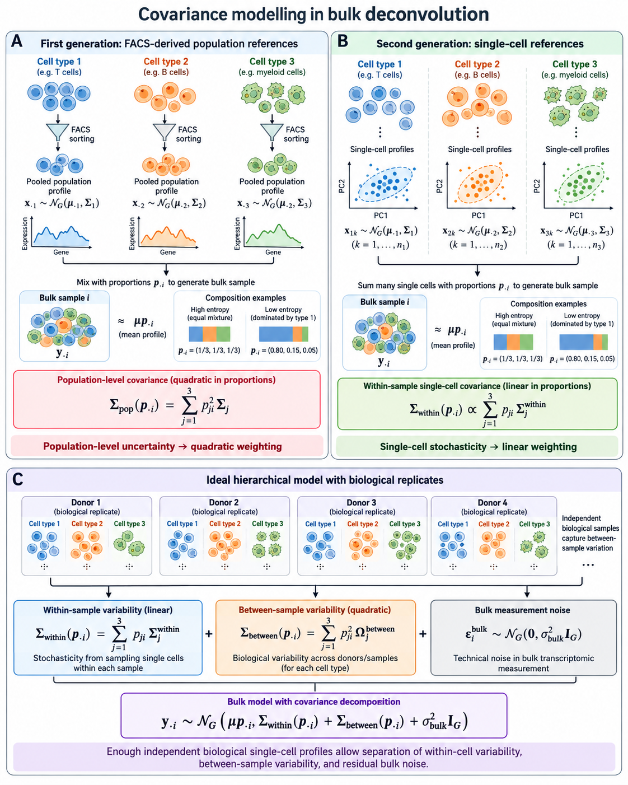
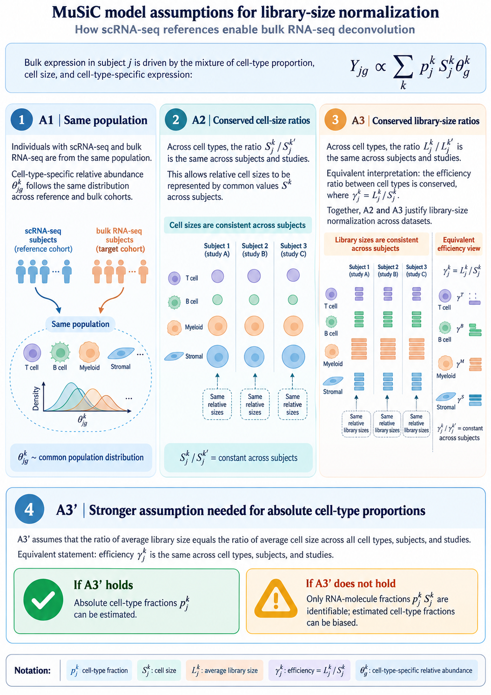

%%{init: {"theme": "sandstone"}}%%
flowchart TD
A["Lineage-aware bulk mRNA deconvolution"] --> B{"Parent–child linkage"}
B -->|"Hard equality (Eq. parent–child)"| C["MuSiC, SCDC, HIDE, Rectangle"]
B -->|"Soft / uncoupled levels"| D["HiDecon, Kassandra"]
C --> E{"Genes at each node"}
D --> F{"Genes at each node"}
E -->|"Fixed reference matrix"| G["SCDC ensemble"]
E -->|"Node-local reweighting"| H["MuSiC, HIDE, Rectangle"]
F -->|"Shared matrix + penalty"| I["HiDecon"]
F -->|"Level-specific signatures"| J["Kassandra"]
Scope
Outlook on extending DeCovarT beyond the closed-reference Gaussian convolution. Sec. 1 fixes the index set. Sec. 3 derives the mean and the three covariance layers from single-cell replicates, then compares regression and probabilistic engines. Later sections cover Scheffé-type mixture structure, alternative observation laws and Bayesian CTS inference, sample-level covariates, incomplete references, isoforms, RNA–cell uncoupling, weighted / generalised least squares, Firth penalisation for few bulk samples, lineage and archetypes, time-resolved composition, ensembles, spatial transcriptomics, and multi-omics. Compositional reparametrisation is implemented in
additive_logistic()and documented numerically in the derivatives under simplex transforms vignette. The same catalogue is tracked in GitHub issue 5.
Notation
Indices and random objects below are fixed for the rest of this vignette, including the single-cell extension in Sec. 3. They match the plate diagram in the package README.
| Symbol | Meaning |
|---|---|
| g=1,\ldots,G | Gene |
| j=1,\ldots,J | Cell type |
| i=1,\ldots,N | Bulk sample |
| r=1,\ldots,R | Independent biological replicate in the single-cell reference |
| c=1,\ldots,C_{jr} | Cell of type j in replicate r |
| \boldsymbol{y}_{\cdot i}\in\mathbb{R}^{G} | Bulk profile of sample i |
| \boldsymbol{p}_{\cdot i}\in\Delta^{J-1} | Cell-number fractions; p_{ji}\ge 0, \sum_j p_{ji}=1 |
| \boldsymbol{q}_{\cdot i} | RNA-mass fractions (see Sec. 4.5) |
| \boldsymbol{\mu}_{\cdot j}\in\mathbb{R}^{G} | Cross-replicate mean expression of one cell of type j |
| \boldsymbol{X}_{jrc} | Expression of cell c |
| \boldsymbol{M}_{jr} | Replicate-specific population mean of type j |
| \boldsymbol{\Sigma}_{W,j} | Within-replicate cell-to-cell covariance |
| \boldsymbol{\Sigma}_{B,j} | Between-replicate covariance of \boldsymbol{M}_{jr} |
| \boldsymbol{\Sigma}_{\mathrm{obs},i} | Residual bulk noise: diagonal, possibly heteroscedastic, no gene–gene correlation |
| S_j | Mean transcriptome size (RNA content) of type j |
| \boldsymbol{\theta}_{\cdot j} | Relative abundance inside type j, \sum_g\theta_{gj}=1, so \boldsymbol{\mu}_{\cdot j}=S_j\boldsymbol{\theta}_{\cdot j} |
| a_i>0 | Sample-wise scale (depth, tissue size). Shared by all genes |
| \boldsymbol{d}\in\mathbb{R}^{G}_{+} | Optional gene-wise platform scale. Not free inside one bulk fit |
The current DeCovarT convolution (Eq. 2) is the special case in which each reference is one random population profile with covariance \boldsymbol{\Sigma}_j=\boldsymbol{\Sigma}_{B,j}, the sample scale is absorbed into \boldsymbol{y}_{\cdot i}, and both \boldsymbol{\Sigma}_{W,j} and \boldsymbol{\Sigma}_{\mathrm{obs},i} are omitted. \boldsymbol{\rho}_i in the README diagram is the unconstrained coordinate with \boldsymbol{p}_{\cdot i}=\psi(\boldsymbol{\rho}_i) the soft-max.
Bulk transcriptomic deconvolution is one instance of a mixture inverse problem: a composite signal (tissue expression, a spectrum, a chromatogram) is observed, and we seek the proportions \boldsymbol{p} of underlying components. Because \boldsymbol{p} is compositional (parts of a whole), estimates must lie on the simplex \Delta^{J-1}=\{\boldsymbol{p}\in[0,1]^J:\sum_j p_j=1\}. (Chassagnol et al. 2023) model each reference profile as multivariate Gaussian and recover \boldsymbol{p} by constrained maximum likelihood; classical deconvolution tools such as CIBERSORT assume gene-wise independence instead (Newman et al. 2015).
Mixture design and first-order structure
Mixture experiments and compositional data
DeCovarT—and bulk deconvolution more generally—sits inside the wider class of mixture inverse problems in formulation science, spectroscopy, and designed experiments where component fractions are explicit regressors on the simplex. R offers only a handful of packages for designed mixture points (as opposed to random \boldsymbol{p} on \Delta^{J-1}):
AlgDesign(Wheeler 2025) — lattice and simplex-centroid mixture designs viagenMixture()/gen.mixture(), plus D-, A-, and I-optimal designs; the closest general substitute for classical mixture DOE.skpr(Morgan-Wall and Khoury 2025) — optimal mixture designs from a candidate set under \sum_j p_j=1; preferable when optimality criteria matter more than fixed simplex-centroid lattices.A modular Scheffé-type benchmark would combine
AlgDesign(orskpr) to propose \boldsymbol{p}, DeCovarT (or baselines) to invert the mixture, and compositional metrics from the simulation vignettes.
In designed mixture experiments (chemistry, food science, formulation), component proportions are explicit regressors with no free intercept because \sum_j p_j=1. A Scheffé cubic model for three components reads
y = \beta_1 p_1 + \beta_2 p_2 + \beta_3 p_3 + \beta_{12} p_1 p_2 + \beta_{13} p_1 p_3 + \beta_{23} p_2 p_3 + \beta_{123} p_1 p_2 p_3, \tag{1}
with every p_j\in[0,1] and \sum_j p_j=1 (Brown et al. 2015; Aitchison 1982). DeCovarT’s current release implements only the first-order part of Eq. 1 in a probabilistic setting: for cell type j, reference mean \boldsymbol{\mu}_j and covariance \boldsymbol{\Sigma}_j are given, and the bulk mixture satisfies
\boldsymbol{Y}\mid\boldsymbol{p} \sim \mathcal{N}\!\left( \sum_{j=1}^{J} p_j\,\boldsymbol{\mu}_j,\; \sum_{j=1}^{J} p_j^{2}\,\boldsymbol{\Sigma}_j \right). \tag{2}
Eq. 2 is the Gaussian-convolution likelihood optimised in deconvolute_ratios(); it extends mean-only linear deconvolution by propagating gene–gene covariance, not by adding Scheffé interaction monomials.
Interaction and synergy terms
Synergy or antagonism between components corresponds to second-order terms in Eq. 1: a positive \beta_{12} means the joint presence of components 1 and 2 raises the response above the additive prediction \beta_1 p_1+\beta_2 p_2. A natural generative extension would enrich the mean and, optionally, the covariance:
\mathbb{E}[\boldsymbol{Y}] = \sum_j p_j\,\boldsymbol{\mu}_j + \sum_{j<k} f(p_j,p_k)\,\boldsymbol{\mu}_{jk} + \cdots, \tag{3}
\boldsymbol{\Sigma}(\boldsymbol{p}) = \sum_j p_j^{2}\,\boldsymbol{\Sigma}_j + \sum_{j<k} g(p_j,p_k)\,\boldsymbol{\Sigma}_{jk} + \cdots, \tag{4}
with f,g often taken as p_j p_k. Allowing \operatorname{Cov}(\boldsymbol {X}_j,\boldsymbol{X}_k)\neq\boldsymbol{0} relaxes DeCovarT’s independence assumption between components and captures non-additive mixing. Such a model remains compatible with the same simplex constraint on \boldsymbol{p} and could still be fitted by constrained MLE, at the cost of many additional interaction parameters and careful guard against overfitting.
The present generative framework keeps a linear mean map \boldsymbol{y}=\boldsymbol{\mu}\boldsymbol{p}. When the regression of a compositional response on Euclidean predictors is itself nonlinear, flexible simplicial nonparametric models (Tsagris et al. 2023) and folded \alpha-distributions on the simplex (Tsagris and Stewart 2020) are a natural outlook; they are not used in the current convolution.
Lineage-aware hierarchical deconvolution
Flat deconvolution treats every cell type as a sibling on one simplex. Hierarchical methods instead estimate proportions at several granularities linked by a cell-type tree: broad compartments first, then closely related subtypes whose mean signatures are collinear at the leaf level.
We reuse the DeCovarT set-up from the article: gene g=1,\ldots,G; cell type or tree node j; sample i=1,\ldots,N (independence across i). Slices follow the usual dot notation (\boldsymbol{\mu}_{\cdot j}, \boldsymbol{y}_{\cdot i}).
- \boldsymbol{y}=(y_{gi})\in\mathbb{R}_{+}^{G\times N}: bulk expression; \boldsymbol{y}_{\cdot i}\in\mathbb{R}_{+}^{G} is sample i.
-
\boldsymbol{\mu}=(\mu_{gj})\in\mathbb{R}^{G\times J}: mean signature; \boldsymbol{\mu}_{\cdot j}\in\mathbb{R}^{G} is the cross-sample mean profile of type j (as in
MuSiC(Wang et al. 2019)). - \boldsymbol{p}=(p_{ji})\in\,]0,1[^{J\times N}: unknown relative proportions; \boldsymbol{p}_{\cdot i}\in\,]0,1[^{J} is the composition of sample i.
\boldsymbol{y}_{\cdot i}=\boldsymbol{\mu}\,\boldsymbol{p}_{\cdot i}, \tag{5}
\sum_{j=1}^{J} p_{ji}=1, \qquad p_{ji}\ge 0 \qquad (i=1,\ldots,N). \tag{6}
p_{j,i}=\sum_{c\in\mathcal{C}(j)} p_{c,i} \qquad (i=1,\ldots,N). \tag{7}
At each tree level the bulk mixture satisfies Eq. 5 with each composition on the unit simplex (Eq. 6). For a parent node j with child set \mathcal{C}(j), coherent hierarchical estimates require Eq. 7.
Hard versus soft lineage constraints
Despite diverse implementations, hierarchical bulk mRNA deconvolution methods fall into two constraint regimes:
-
Hard constraints — child lineage ratios are forced to sum exactly to the parent estimate (Eq. 7).
MuSiCandSCDC(tree-guided mode) first fix a parent total \hat{p}_{j,i}, then fit children q_{c,i} on the within-parent simplex so that \hat{p}_{c,i}=q_{c,i}\,\hat{p}_{j,i} (Wang et al. 2019; Dong et al. 2021).HIDEapplies the same equality by renormalising child estimates after each top-down split (Völkl et al. 2025);Rectanglepropagates coarse cluster fractions as hard bounds on fine-grained estimates (Eder et al. 2026). -
Soft constraints — parent–child coherence is encouraged but not enforced exactly.
HiDeconadds a squared mismatch penalty to the deconvolution loss (Huang, Cai, Lu, et al. 2024);Kassandratrains separate predictors at predefined hierarchy levels without an explicit parent–child equality (Zaitsev et al. 2022).
Hard splitting after fixing the parent (Eq. 8):
\hat{p}_{c,i}=q_{c,i}\,\hat{p}_{j,i}, \quad q_{c,i}\ge 0,\; \sum_{c\in\mathcal{C}(j)} q_{c,i}=1. \tag{8}
HIDE renormalisation (Eq. 9):
\hat{p}_{c,i}\leftarrow \hat{p}_{c,i}\, \frac{\hat{p}_{j,i}}{\sum_{c'\in\mathcal{C}(j)}\hat{p}_{c',i}}. \tag{9}
HiDecon soft penalty (Eq. 10):
\mathcal{L}_{\mathrm{tot}} = \mathcal{L}_{\mathrm{deconv}} + \lambda\sum_{j}\sum_{i=1}^{N} \Bigl( p_{j,i}-\sum_{c\in\mathcal{C}(j)} p_{c,i} \Bigr)^{2}. \tag{10}
Within each regime, methods further differ by whether they reuse a single reference signature at every granularity or reselect / reweight genes locally at each internal node (Figure 1).
xCell 2.0 (Angel et al. 2025) uses Cell Ontology ancestry to build signatures and control spillover between related labels, but its outputs are enrichment scores rather than a compositional tree; it sits outside the hard/soft fraction taxonomy above.
| method | constraint | lineage constraint | gene strategy |
|---|---|---|---|
| MuSiC | Hard | Fix \(\hat{p}_{j,i}\); \(\hat{p}_{c,i}=q_{c,i}\hat{p}_{j,i}\), \(\sum_c q_{c,i}=1\) | Node-local consistent genes |
| SCDC | Hard (tree-guided) | MuSiC step; \(\hat{p}_{c,i}=q_{c,i}\hat{p}_{j,i}\) | Full reference; optional node split |
| HIDE | Hard | Fit then renormalise: \(\hat{p}_{c,i}\leftarrow\hat{p}_{c,i}\hat{p}_{j,i}/\sum_{c'}\hat{p}_{c',i}\) | Parent-specific learned weights |
| Rectangle | Hard (multiscale) | Coarse \(\boldsymbol{p}^{(\mathrm{coarse})}\) bounds fine estimates | Clustered + direct signatures |
| HiDecon | Soft | \(\mathcal{L}_{\mathrm{tot}}=\mathcal{L}_{\mathrm{deconv}}+\lambda\sum_{j,i}(p_{j,i}-\sum_c p_{c,i})^2\) | Shared $\boldsymbol{\mu}$; joint penalised fit |
| Kassandra | Soft / uncoupled | Separate models; no parent–child equality | Level-specific trained signatures |
| xCell 2.0 | None (scores) | Ontology spillover control only | Ontology-aware signature generation |
Table 1 and Figure 1 summarise the landscape aligned with Eq. 5–Eq. 7. Hard methods (MuSiC, HIDE, Rectangle) are easier to audit node by node but inherit upstream bias; soft coupling (HiDecon) can stabilise rare subtypes when the tree is credible. Node-local gene reweighting (MuSiC, HIDE, Rectangle) targets collinear siblings; fixed or level-specific signatures (SCDC, Kassandra) trade flexibility for simpler reference construction.
A natural DeCovarT extension would combine Eq. 2 with either Eq. 8 or Eq. 10, node-local marker panels, and ALR optimisation when a curated lineage tree is supplied—benchmarked at broad, intermediate, and terminal resolutions against HiDecon, HIDE, tree-guided MuSiC, and Rectangle. Spatial HIDF applies the same tree idea to spots with an RCTD back-end (Zou et al. 2026); scDETECT uses a lineage prior for differential expression rather than for \boldsymbol{p} (Xu et al. 2025). Archetypes and cell states (type versus shared gene-expression programmes) are taken up in Sec. 6.1.
Single-cell moments and population alignment
The signature that enters Eq. 2 is a population profile: one mean vector and one covariance per cell type. Single-cell counts are not that object. This section states how to build the mean and how the covariance splits, then how to place the resulting profiles on the same scale as bulk sample i.


Figure 2 is the target decomposition. Panel A is a purified population profile (quadratic in p_{ji}). Panel B is one single-cell reference (linear in p_{ji}). Panel C is the hierarchical model once R independent replicates exist.
Mean: average cells, then average replicates
For a fixed type j, the per-cell mean does not depend on how many cells were captured. With raw counts on an additive scale,
\bar{\boldsymbol{X}}_{jr} = \frac{1}{C_{jr}}\sum_{c=1}^{C_{jr}}\boldsymbol{X}_{jrc}, \qquad \hat{\boldsymbol{\mu}}_{\cdot j} = \frac{1}{R}\sum_{r=1}^{R}\bar{\boldsymbol{X}}_{jr}. \tag{11}
Divide by the cell count C_{jr}, not by the library size. Library-size weights w_c=L_c/\sum_d L_d are functions of \boldsymbol{X}_c itself. Their probability limit is \boldsymbol{\mu}+\boldsymbol{\Sigma}\mathbf{1}/(\mathbf{1}^{\top}\boldsymbol{\mu}), so they target an RNA-weighted cell and destroy the exact Gaussian scale that leaves the precision graph unchanged. Under i.i.d. cells the arithmetic mean also has the largest effective sample size among deterministic convex weights.
Pool cells across replicates only after the within-replicate mean. A replicate with 10\,000 cells must not outweigh a replicate with 500 cells. MuSiC is built on that multi-subject split: cross-subject means and variances, with genes weighted by cross-subject and cross-cell consistency (Wang et al. 2019).
When every cell is scaled to a common total, the product S_j\boldsymbol{\theta}_{\cdot j} collapses to the arithmetic mean of the raw counts. MuSiC writes the signature as cell size times relative abundance and then recovers that same per-cell mean. Keep S_j and \boldsymbol{\theta}_{\cdot j} as separate factors (Sec. 3.3). Do not library-weight the raw vectors and call the result S_j.
Warning 1: Summing cells is the wrong signature, and the right pseudobulk
Summing is the correct total for a physical pool of exactly C_{jr} cells, \boldsymbol{T}_{jr}=\sum_c\boldsymbol{X}_{jrc}, with mean C_{jr}\boldsymbol{\mu}_{\cdot j} and covariance C_{jr}\boldsymbol{\Sigma}_{W,j}. Using \boldsymbol{T}_{jr} as a DeCovarT column inserts the arbitrary capture count into \boldsymbol{p}. A type with ten times more reference cells looks ten times more abundant.
The same sum is the right input for a different question. Differential expression of one cell type across donors needs one count vector per donor, then a bulk count model such as
DESeq2(Love et al. 2014). There the estimand is a relative fold change of averaged counts, and the donor is the independent unit. Cells from one donor are subsamples. Treating them as replicates inflates false discoveries (Squair et al. 2021). That analysis does not estimate \boldsymbol{p}_{\cdot i}.
Three reference regimes
Write the cell as a sum of a replicate effect and a cell effect,
\boldsymbol{X}_{jrc} = \boldsymbol{\mu}_{\cdot j}+\boldsymbol{B}_{jr}+\boldsymbol{\varepsilon}_{jrc}, \tag{12}
with \boldsymbol{B}_{jr}\sim\mathcal{N}(\boldsymbol{0},\boldsymbol{\Sigma}_{B,j}) and \boldsymbol{\varepsilon}_{jrc}\sim\mathcal{N}(\boldsymbol{0},\boldsymbol{\Sigma}_{W,j}), independent across j given \boldsymbol{p}_{\cdot i}. The bulk average per cell in a tissue of N_i cells is
\boldsymbol{A}_i = \sum_j p_{ji}(\boldsymbol{\mu}_{\cdot j}+\boldsymbol{B}_{jr(i)}) + \frac{1}{N_i}\sum_j\sum_{c=1}^{N_i p_{ji}}\boldsymbol{\varepsilon}_{ijc}. \tag{13}
FACS-sorted population profiles
Historically the reference was one bulk profile per purified population: surface-marker sorting, then a pooled microarray or RNA-seq library. The random object is the whole population vector \boldsymbol{Z}_{ij}\sim\mathcal{N}(\boldsymbol{\mu}_{\cdot j},\boldsymbol{\Sigma}_{B,j}), and the bulk is the convolution
\boldsymbol{y}_{\cdot i} = \sum_j p_{ji}\boldsymbol{Z}_{ij}, \qquad \operatorname{Cov}(\boldsymbol{y}_{\cdot i}\mid\boldsymbol{p}_{\cdot i}) = \sum_j p_{ji}^{2}\,\boldsymbol{\Sigma}_{B,j}. \tag{14}
The square appears because one random profile is multiplied by p_{ji}, not because p_{ji} cells were added. This is the covariance in Eq. 2. If several types are sorted from the same donors, cross-type blocks \boldsymbol{\Sigma}_{B,jk} add terms p_{ji}p_{ki}. Before droplet scRNA-seq, those population profiles came from FACS- or MACS-purified bulk libraries. Szaniszlo et al. showed that mixture expression reflects composition and that a minor subset is recovered only after physical sorting, while also stressing coexpression among genes inside a purified type (Szaniszlo et al. 2004). Novershtern et al. profiled 38 marker-defined haematopoietic populations and used coexpression modules plus promoter cis-circuits as the gene–gene structure of each state (Novershtern et al. 2011). Those studies are the historical FACS reference that Eq. 14 still describes.
One single-cell replicate (R=1)
R=1 identifies \boldsymbol{M}_{j1} and \boldsymbol{\Sigma}_{W,j}. It does not identify \boldsymbol{\Sigma}_{B,j}: extra cells shrink \boldsymbol{\Sigma}_{W,j}/C_{j1} and leave the single draw \boldsymbol{B}_{j1} untouched. The coherent bulk covariance is the mixture / physical sum, linear in p_{ji}:
\operatorname{Cov}(\boldsymbol{A}_i\mid\boldsymbol{p}_{\cdot i}) = \kappa_i\sum_j p_{ji}\,\boldsymbol{\Sigma}_{W,j} + \boldsymbol{\Sigma}_{\mathrm{obs},i}. \tag{15}
Here \kappa_i is an effective cells-per-bulk scale. The ideal value is 1/N_i. The number of reference cells C_{j1} is not N_i. A finite-cell reference mean adds a separate quadratic term \sum_j p_{ji}^{2}\boldsymbol{\Sigma}_{W,j}/C_{j1}. That term is Monte Carlo error of \hat{\boldsymbol{\mu}}_{\cdot j}, not biological between-donor covariance. Do not drop \boldsymbol{\Sigma}_{W,j} into the p_{ji}^{2} slot of Eq. 2.
For a rare type, p_{ji}=0.01 makes p_{ji}^{2} a hundred times smaller than p_{ji}. A within-cell covariance placed in the quadratic slot is almost silenced.
Enough biological replicates
The smallest R that identifies a variance component is R\ge 2. The replicate means satisfy
\bar{\boldsymbol{X}}_{jr} \sim \mathcal{N}\!\left( \boldsymbol{\mu}_{\cdot j},\; \boldsymbol{\Sigma}_{B,j}+\frac{\boldsymbol{\Sigma}_{W,j}}{C_{jr}} \right). \tag{16}
A method-of-moments contrast is then available. Let \boldsymbol{S}_{B,j} be the sample covariance of \{\bar{\boldsymbol{X}}_{jr}\}_{r=1}^{R} and \bar{C}_j a typical cell count. Then
\mathbb{E}[\boldsymbol{S}_{B,j}] = \boldsymbol{\Sigma}_{B,j} + \overline{\boldsymbol{\Sigma}_{W,j}/C_{jr}}, \tag{17}
so \hat{\boldsymbol{\Sigma}}_{B,j}=\boldsymbol{S}_{B,j}-\widehat{\boldsymbol{\Sigma}}_{W,j}/\bar{C}_j, projected onto the positive semidefinite cone. An unstructured G\times G covariance has G(G+1)/2 free entries. Transcriptome-scale G makes that matrix unestimable for the R of a normal single-cell study. What R\ge 2 buys is the scalar separation of the two layers, or a sparse precision for \boldsymbol{\Sigma}_{B,j}, not a dense G\times G matrix. Reference cohorts in current single-cell deconvolution are small; MEAD states this explicitly (Xie and Wang 2023). Cells from one donor share genetic and environmental background, so they are subsamples rather than independent biological units. Zimmerman, Espeland and Langefeld document that dependence across cell types, and they treat donor as the random effect when contrasting conditions (Zimmerman et al. 2021). That within-versus-between split is the same hierarchy as \boldsymbol{\Sigma}_{W,j} versus \boldsymbol{\Sigma}_{B,j} when a single-cell reference is aligned with bulk.
With that split, the bulk law DeCovarT should use is
\boldsymbol{y}_{\cdot i}\mid\boldsymbol{p}_{\cdot i} \sim \mathcal{N}\!\Big( a_i\sum_j p_{ji}\boldsymbol{\mu}_{\cdot j},\; \sum_j p_{ji}^{2}\,\boldsymbol{\Sigma}_{B,j} + \kappa_i\sum_j p_{ji}\,\boldsymbol{\Sigma}_{W,j} + \boldsymbol{\Sigma}_{\mathrm{obs},i} \Big). \tag{18}
\boldsymbol{\Sigma}_{\mathrm{obs},i} is diagonal. Gene–gene correlation is already inside \boldsymbol{\Sigma}_{B,j} and \boldsymbol{\Sigma}_{W,j}. Heteroscedastic diagonal entries are allowed. Off-diagonal residual correlation would double-count the network.
%%{init: {"theme": "sandstone", "flowchart": {"curve": "basis"}}}%%
flowchart TD
ref["Reference used to build mu_j and Sigma_j"] --> facs["FACS-sorted population profiles"]
ref --> r1["Single-cell reference, R = 1"]
ref --> rR["Single-cell reference, R at least 2"]
facs --> q["Quadratic convolution: sum p_ji squared Sigma_B,j"]
r1 --> lin["Linear mixture: kappa_i sum p_ji Sigma_W,j"]
rR --> both["Quadratic Sigma_B plus linear Sigma_W plus diagonal Sigma_obs"]
lin --> noise["Plus diagonal residual Sigma_obs,i"]
q --> noise
Aligning reference profiles with bulk sample i
Eq. 11 is a per-cell mean. Bulk sample i is a library. Three scales sit between them. Only two belong inside the estimator.
Sample scale a_i. On an absolute molecule scale, \boldsymbol{y}_{\cdot i}=a_i\boldsymbol{\mu}\boldsymbol{p}_{\cdot i} plus noise. a_i absorbs cell number, sequencing depth, and capture. It is one positive number per bulk sample. Profile it out, or estimate it jointly with \boldsymbol{p}_{\cdot i}. It is not a biological composition parameter.
Cell size S_j. RNA content differs by cell type, so
\boldsymbol{y}_{\cdot i} = a_i\sum_j p_{ji} S_j\boldsymbol{\theta}_{\cdot j} + \boldsymbol{\varepsilon}_i. \tag{19}
MuSiC states the same product: cell fraction, average cell size, relative abundance (Wang et al. 2019). If S_j is measured, insert it. Do not re-estimate it. Free S_j and \boldsymbol{p}_{\cdot i} are not separately identifiable from \boldsymbol{y}_{\cdot i} alone, because only the products p_{ji}S_j enter Eq. 19. The RNA fraction
q_{ji} = \frac{p_{ji}S_j}{\sum_k p_{ki}S_k} \tag{20}
is what a normalised bulk identifies. \boldsymbol{q}_{\cdot i}=\boldsymbol{p}_{\cdot i} when S_j is constant across j. That constant-efficiency hypothesis is assumption A3' of MuSiC: the ratio of average library size equals the ratio of average cell size, equivalently a common capture efficiency \gamma_j=L_j/S_j (Figure 3). Under A3', the arithmetic mean across cells is the right signature and the fitted weights are cytometry fractions. If A3' fails, the fitted weights are RNA fractions and a later division by S_j (Eq. 27) is required.
EPIC and quanTIseq apply that division after a linear fit, using an external RNA-content assay, so the optimiser itself returns transcriptomic ratios (Racle et al. 2017; Finotello et al. 2019). MMAD estimates the extraction efficiencies inside a non-linear conjugate-gradient step (Liebner et al. 2014). ReDeconv keeps transcriptome size in the reference by Count-based Linearised Transcriptome Size (CLTS) normalisation, instead of dividing every cell by its own total (Lu et al. 2025).
Gene-wise scale \boldsymbol{d}. A platform shift can be gene-specific, y_{gi}\approx d_g a_i\sum_j p_{ji}\mu_{gj}. Bisque learns such a map from paired bulk and single-cell measurements when technical variation between the two assays is large (Jew et al. 2020). Fitting \{d_g\} on the same bulk sample that is being deconvolved lets the scale absorb any residual, and \boldsymbol{p}_{\cdot i} is then unidentified. Estimate \boldsymbol{d} on an external paired cohort, or do not estimate it.
Normalisation that preserves the linear mixture
The moment identities above are for raw counts on an additive scale. They do not survive a logarithm: \log\boldsymbol{y}_{\cdot i} is not \sum_j p_{ji}\log\boldsymbol{\mu}_{\cdot j}.
The comparison DeCovarT needs is the same gene on two technologies, not two genes inside one sample. Gene length is a property of the assay. It cancels for a within-gene contrast and should not be divided out of the reference unless the bulk was length-normalised in the same way. ReDeconv treats length as a bulk-only TPM/RPKM correction and leaves UMI single-cell counts uncorrected for length (Lu et al. 2025).
| Procedure | What it estimates | Use for \boldsymbol{\mu}_{\cdot j} |
|---|---|---|
| Arithmetic mean of raw counts | Per-cell mean | Default signature |
| CPM / CP10K | Library-size relative profile | Erases S_j |
| TPM / RPKM / FPKM | Length-adjusted composition | Breaks cross-platform per-gene alignment |
TMM (edgeR) or median-of-ratios (DESeq2) |
Effective library size for differential expression | Donor-level DE, not the signature (Robinson et al. 2010; Love et al. 2014) |
SCTransform |
Regularised negative-binomial residuals | Clustering and integration, not an additive mixture mean (Hafemeister and Satija 2019) |
CLTS (ReDeconv) |
Counts rescaled by a linearised transcriptome size | Keeps S_j for deconvolution (Lu et al. 2025) |
CPM and CP10K divide by the cell total. That is a relative profile \boldsymbol{\theta}_{\cdot j} with S_j discarded. TMM and the DESeq2 size factor answer a different question: an effective depth for between-sample differential expression, under a hypothesis that most genes are stable (Robinson et al. 2010; Love et al. 2014). SCTransform models depth inside a negative binomial; the residuals are not an additive convolution mean (Hafemeister and Satija 2019).
Tracks for a three-layer DeCovarT
Released DeCovarT is the FACS convolution: quadratic \boldsymbol{\Sigma}_{B,j}, no \boldsymbol{\Sigma}_{W,j}, no \boldsymbol{\Sigma}_{\mathrm{obs},i}. The extension in Eq. 18 adds the two missing layers and the scales a_i and S_j. Second-generation methods already implement pieces of that programme. The same symbols are used below. a_i is their sample scale, S_j their cell size, \boldsymbol{d} their gene-wise platform factor.
Regression engines
These methods treat \boldsymbol{\mu} as fixed once it has been averaged, and solve a simplex-constrained linear regression. They do not put a sampling law on \boldsymbol{y}_{\cdot i}.
%%{init: {"theme": "sandstone", "flowchart": {"curve": "basis"}}}%%
flowchart TD
root["Regression: y_i = a_i mu p_i, p_i on the simplex"]
root --> multi["Multi-subject reference"]
root --> oneRef["One averaged signature"]
multi --> music["MuSiC: weights by cross-subject and cross-cell consistency; keeps S_j"]
multi --> music2["MuSiC2: same weights, iterative removal of condition-specific genes"]
oneRef --> dwls["DWLS: dampened weighted least squares; average cells, sum to simulate bulk"]
oneRef --> bisque["Bisque: gene-wise map d from paired bulk and single-cell"]
oneRef --> tca["Wang 2022: matrix completion of the cell-type transcriptome"]
Reference uncertainty. MuSiC down-weights genes whose cross-subject variance is large relative to their cross-cell variance, which is an empirical stand-in for \boldsymbol{\Sigma}_{B,j} versus \boldsymbol{\Sigma}_{W,j} (Wang et al. 2019). MuSiC2 keeps that weighting and iteratively removes genes that are differentially expressed between the reference condition and the bulk condition (Fan et al. 2022). DWLS averages cells to form \boldsymbol{\mu}_{\cdot j} and dampens high-leverage genes; the artificial bulk used for weighting is a sum of single-cell profiles, which matches Note 1. Bisque reduces single-cell noise by aggregating to a pseudobulk before learning \boldsymbol{d} (Jew et al. 2020). The 2022 matrix-completion preprint reconstructs the cell-type-resolution transcriptome rather than a single \boldsymbol{\mu}_{\cdot j}; it is a bulk completion method, not a covariance model (Wang et al. 2022). None of these five returns \boldsymbol{\Sigma}_{W,j} as a linear mixture weight. RCTD is the spatial analogue for reference uncertainty: it learns cell-type profiles from scRNA-seq, then decomposes spatial mixtures while correcting platform scale (Cable et al. 2022).
Alignment. MuSiC and MuSiC2 keep S_j inside the design and use a sample-level normalisation so that a_i does not have to be a free parameter (Wang et al. 2019; Fan et al. 2022). Bisque is the explicit \boldsymbol{d} method, estimated from the pairing of assays, not from the bulk sample alone (Jew et al. 2020). DWLS inherits whatever scale the averaged signature was built on (Tsoucas et al. 2019). CLTS is the normalisation that matches Eq. 19; CPM does not (Lu et al. 2025).
Generative model and estimation. The observation equation is ordinary or weighted least squares,
\hat{\boldsymbol{p}}_{\cdot i} = \arg\min_{\boldsymbol{p}\in\Delta^{J-1}} \|\boldsymbol{y}_{\cdot i}-a_i\boldsymbol{\mu}\boldsymbol{p}\|^{2}_{W}, \tag{21}
with W a diagonal gene-weight matrix. There is no likelihood, so there is no Fisher information for \boldsymbol{p}_{\cdot i}. Interval estimates, where they exist, come from resampling subjects (MuSiC) or from the regression sandwich, not from a Gaussian convolution. Assumptions shared by the family: additive scale, fixed library size after normalisation, \boldsymbol{\mu} independent of \boldsymbol{p}_{\cdot i}, and no residual gene–gene covariance inside the loss.
%%{init: {"theme": "sandstone", "flowchart": {"curve": "basis"}}}%%
flowchart TB
subgraph plateR["r = 1 to R"]
direction TB
Xr["X_jr bar"]
end
mu["mu_j fixed"]
Sj["S_j"]
Xr --> mu
subgraph plateI["i = 1 to N"]
direction TB
ai["a_i"]
pi["p_i"]
yi["y_i"]
ai --> yi
pi --> yi
end
mu --> yi
Sj --> yi
Probabilistic engines, set against DeCovarT
RNA-Sieve and MEAD are errors-in-variables models: the design \boldsymbol{\mu} is observed with error, and a regression that ignores that error is attenuated (Erdmann-Pham et al. 2021; Xie and Wang 2023). DECALS keeps a subject-specific covariance but estimates \boldsymbol{p}_{\cdot i} by constrained least squares, with an asymptotic covariance that does not require a Gaussian bulk (Cai et al. 2024). ReDeconv and DeCovarT both put a parametric law on the bulk pointwise, not only in the large-gene limit. They differ in the law and in the dependence on \boldsymbol{p}_{\cdot i}.
DECALS and MEAD are cited from the second-generation literature (Cai et al. 2024; Xie and Wang 2023), as are RNA-Sieve and ReDeconv (Erdmann-Pham et al. 2021; Lu et al. 2025).
%%{init: {"theme": "sandstone", "flowchart": {"curve": "basis"}}}%%
flowchart TD
root["Probabilistic deconvolution of y_i"]
root --> eiv["Errors in variables: mu observed with error"]
root --> cls["Constrained least squares, free of a bulk law"]
root --> par["Parametric bulk law, pointwise"]
eiv --> sieve["RNA-Sieve: gene-wise CLT, mean and variance"]
eiv --> mead["MEAD: multivariate extension, gene-gene correlation, scales a_i and d"]
cls --> decals["DECALS: subject-specific Sigma_i of p, constrained LS, asymptotic covariance"]
par --> rede["ReDeconv: univariate variances, linear in p, CLTS scale S_j"]
par --> deco["DeCovarT: sparse multivariate Gaussian, quadratic in p"]
Reference uncertainty. RNA-Sieve estimates a per-gene mean and variance from the reference cells and treats both the reference moments and the bulk as noisy. The marginal law of a random cell is a mixture; the bulk, as a sum of many cells, is handled by a central-limit normal likelihood. Dependence across genes is not a full \boldsymbol{\Sigma}_{W,j} (Erdmann-Pham et al. 2021). MEAD is the multivariate extension: the reference enters as a noisy design, gene–gene correlation is retained, and the model allows a sample scale and a gene-wise scale (Xie and Wang 2023). DECALS estimates cell-type-specific covariances from the bulk residuals themselves, because \operatorname{Cov}(\boldsymbol{y}_{\cdot i}) depends on \boldsymbol{p}_{\cdot i}, and then builds a subject-specific \boldsymbol{\Sigma}_i (Cai et al. 2024). It argues that the sandwich covariance used for MEAD does not consistently estimate that subject-specific matrix. ReDeconv uses a per-gene, per-type variance with linear weight p_{ji}, which is the diagonal of Eq. 15, together with CLTS so that S_j is not normalised away (Lu et al. 2025). DeCovarT estimates a sparse precision per type and inserts it only as \boldsymbol{\Sigma}_{B,j}.
Alignment. RNA-Sieve rescales genes so that reference and bulk live on a comparable relative scale; the scale is not a free \boldsymbol{d} inside the simplex fit. MEAD writes \boldsymbol{y}_{\cdot i}=a_i\operatorname{diag}(\boldsymbol{d})\boldsymbol{X}_i\boldsymbol{p}_{\cdot i}+\boldsymbol{\varepsilon}_i and gives identifiability conditions under which \boldsymbol{p}_{\cdot i} survives an arbitrary \boldsymbol{d}. Those conditions are structural constraints on the signature, not “more bulk samples”. This matches the warning in Sec. 3.3. ReDeconv is the method that refuses CP10K precisely because it erases S_j (Lu et al. 2025).
Generative model.
%%{init: {"theme": "sandstone", "flowchart": {"curve": "basis"}}}%%
flowchart TB
subgraph plateR["r = 1 to R"]
direction TB
Bjr["B_jr"]
Xbar["X_jr bar"]
Bjr --> Xbar
end
mu["mu_j"]
SB["Sigma_B,j"]
SW["Sigma_W,j"]
SB --> Bjr
mu --> Xbar
SW --> Xbar
subgraph plateI["i = 1 to N"]
direction TB
ai["a_i"]
pi["p_i"]
eps["epsilon_i diagonal"]
yi["y_i"]
ai --> yi
pi --> yi
eps --> yi
end
mu --> yi
SB -.->|"p_ji squared"| yi
SW -.->|"kappa_i p_ji"| yi
| Design error | Bulk law | Weight of type covariance | Scale | Estimator | |
|---|---|---|---|---|---|
RNA-Sieve |
Yes, gene-wise | Asymptotic normal, genes separate | Variance, not a precision matrix | Relative rescaling | Maximum likelihood, asymptotic regions |
MEAD |
Yes, multivariate | Moment conditions, not a full density | Gene–gene correlation retained | a_i and \boldsymbol{d}, with identifiability conditions | Errors-in-variables estimator, delta-method intervals |
DECALS |
Through \boldsymbol{\Sigma}_i(\boldsymbol{p}) | None | Subject-specific \boldsymbol{\Sigma}_i built from cell-type blocks | Absorbed before regression | Constrained least squares, asymptotic covariance |
ReDeconv |
No | Univariate parametric, pointwise | Linear in p_{ji} | CLTS keeps S_j | Variance-aware regression |
| DeCovarT now | No | Sparse multivariate normal, pointwise | Quadratic in p_{ji} | a_i profiled, S_j not in the likelihood | Constrained maximum likelihood |
| DeCovarT in Eq. 18 | Only via \boldsymbol{\Sigma}_{W,j}/C_{jr} | Same normal family | Quadratic \boldsymbol{\Sigma}_{B,j} plus linear \boldsymbol{\Sigma}_{W,j} plus diagonal \boldsymbol{\Sigma}_{\mathrm{obs},i} | a_i outside, S_j in the mean | Constrained maximum likelihood |
RNA-Sieve and DeCovarT both obtain a normal bulk from a sum of random contributions. RNA-Sieve sums cells (linear variances, central limit, gene by gene). DeCovarT convolves population profiles (quadratic covariances, exact Gaussian, sparse precision). MEAD keeps the multivariate second-moment structure that RNA-Sieve drops, and adds the platform scales. DECALS wants the same subject-specific covariance but will not commit to a density; the price is a least-squares point estimate whose efficiency depends on how well \boldsymbol{\Sigma}_i is estimated. ReDeconv is the univariate, mixture-weighted cousin of the linear term in Eq. 18.
The practical fork is the reference design, not a choice of optimiser.
- R=1. Fit Eq. 15. Report \boldsymbol{q}_{\cdot i} unless S_j is known, in which case apply Eq. 27 or insert S_j in Eq. 19. Do not publish \boldsymbol{\Sigma}_{W,j} as a DeCovarT \boldsymbol{\Sigma}_j.
- R\ge 2 with a sparse or low-rank between-replicate precision. Fit Eq. 18. The original quadratic term is then \boldsymbol{\Sigma}_{B,j} and has a sampling interpretation. \boldsymbol{\Sigma}_{\mathrm{obs},i} stays diagonal.
Statistical perspectives
The present estimator is a closed-reference, continuous, frequentist convolution: \boldsymbol{\mu}_{\cdot j} and \boldsymbol{\Sigma}_{j} are plug-in moments, and only \boldsymbol{p}_{\cdot i} is unknown. The subsections below change the observation law, the reference, or the loss, while keeping the simplex constraint (Eq. 6).
Alternative distributions
Split first by the support of \boldsymbol{y} (integer counts versus continuous intensities), then by frequentist plug-in versus Bayesian joint inference of \boldsymbol{p}_{\cdot i} and sample-level cell-type-specific (CTS) profiles \boldsymbol{x}_{\cdot j,i}.
%%{init: {"theme": "sandstone"}}%%
flowchart TD
A["Bulk observation law"] --> B["Discrete counts"]
A --> C["Continuous intensities"]
B --> D["Multinomial / Dirichlet: ISOpureR, BayesPrism"]
B --> LN["Multinomial logit-normal + gLasso"]
B --> E["Poisson / PLN / ZIPLN: DeconV, Chiquet"]
C --> F["Univariate Gaussian: DSection, DeMix, BayICE"]
C --> G["Multivariate Gaussian convolution: DeCovarT"]
C --> RS["CLT Gaussian + noisy M: RNA-Sieve"]
C --> H["Log-normal convolution: BLADE"]
D --> I["Bayesian joint p and CTS"]
G --> J["Frequentist plug-in mu, Sigma"]
H --> I
Discrete counts
A multinomial (or Dirichlet–multinomial) model treats \boldsymbol{y}_{\cdot i} as integer reads that sum to a library size. ISOpureR implements a hierarchical multinomial–Dirichlet purification of mixed tumour profiles (Anghel et al. 2015). BayesPrism places a multinomial likelihood on bulk counts with a patient-derived scRNA-seq prior and jointly infers \boldsymbol{p}_{\cdot i} and sample-level CTS expression (Chu et al. 2022). DeconV instead uses Poisson aggregation from single-cell to bulk (sums of independent Poissons remain Poisson) and returns interval estimates of \boldsymbol{p}_{\cdot i} (Gynter et al. 2023).
Over-dispersed, correlated counts are the domain of the multivariate Poisson–log-normal (PLN) family: a latent Gaussian vector induces dependence, and a Poisson observation layer yields integer reads (Chiquet et al. 2021, 2018). ZIPLN adds a Bernoulli zero-inflation layer for dropout (Batardière et al. 2025). A DeCovarT-style extension would replace Eq. 2 by a PLN (or ZIPLN) convolution on the latent log-abundance scale, keeping the ALR map on \boldsymbol{p}. A multinomial logit-normal on the gene simplex is a different discrete model: it is compositional association, not a cell-type convolution (Sec. 4.1.3).
Continuous intensities: frequentist versus Bayesian CTS
DeMixT (and DeMix) is the closest published convolution to DeCovarT: a frequentist Gaussian mixture of observed and latent components, but with independent genes and an unknown tumour or stromal profile (Wang et al. 2018; Ahn et al. 2013). DSection is a Bayesian univariate convolution (Normal / Gamma / Dirichlet priors and a Gibbs–Metropolis sampler) (Erkkilä et al. 2010). DeCovarT is frequentist, closed-reference, and multivariate: plug-in (\boldsymbol{\mu},\{\boldsymbol{\Sigma}_{j}\}), no unknown extra component, and a gene–gene residual network inside each \boldsymbol{\Sigma}_{j}.
RNA-Sieve is a supervised likelihood, but not that convolution (Erdmann-Pham et al. 2021). Their M, \alpha and b are DeCovarT’s \boldsymbol{\mu}, \boldsymbol{p} and \boldsymbol{y}. The bulk is modelled as the sum of n cells with a gene-wise central-limit Gaussian, plus measurement error in M (errors-in-variables). Genes are independent. Wald regions use the inverse Fisher information, or the Godambe sandwich under protocol shift. DeCovarT instead uses a full \boldsymbol{\Sigma}(\boldsymbol{p}) and plug-in moments; the resampling counterpart of noisy M is reference_bootstrap_decovart(). A side-by-side comparison is in the MLE properties vignette.
BLADE replaces the Gaussian with a gene-wise log-normal convolution, jointly purifying CTS profiles by variational inference (Andrade Barbosa et al. 2021). bMIND estimates sample-level CTS with an scRNA-seq-derived prior (Wang et al. 2020). The experimental MAP path in R/03_04_DeCovarT_estimate_CTS_MAP_Bayesian.R is the corresponding DeCovarT starting point: recover \boldsymbol{x}_{\cdot j,i} given \boldsymbol{y}_{\cdot i} and \boldsymbol{p}_{\cdot i} under Eq. 2 rather than under independent genes.
Zhang et al. benchmark joint \boldsymbol{p} + CTS engines and report BayesPrism with DWLS gene weights as the strongest combination on pseudobulk and real bulk data (Zhang et al. 2026). That is a weighted-likelihood analogue of Sec. 4.6.
Two simplices without convolution
McGregor et al. model a count vector of D features as compositional, not as a mixture of cell-type Gaussians (McGregor et al. 2026). In DeCovarT notation the features are the G genes. Sample i has library size n_i and gene composition \boldsymbol{\pi}_i\in\Delta^{G-1}. The observation is multinomial,
\boldsymbol{y}_{\cdot i}\mid n_i,\boldsymbol{\pi}_i \sim\mathrm{Multinomial}(n_i,\boldsymbol{\pi}_i), \qquad n_i\sim\mathrm{LogNormal}(\mu_n,\sigma_n^2), \tag{22}
with n_i\perp\boldsymbol{\pi}_i (read depth is treated as a technical scale). The composition is logit-normal on the ALR chart that uses gene G as the reference,
\boldsymbol{w}_i =\mathrm{alr}(\boldsymbol{\pi}_i) =\log(\pi_{1,i}/\pi_{G,i},\ldots,\pi_{G-1,i}/\pi_{G,i}), \qquad \boldsymbol{w}_i\sim\mathcal{N}_{G-1}(\boldsymbol{\mu}_w,\boldsymbol{\Sigma}_w), \qquad \boldsymbol{\pi}_i=\psi(\boldsymbol{w}_i), \tag{23}
where \psi is the additive logistic map already used for cell-type ratios (additive_logistic()). When G is large relative to the number of bulk samples, McGregor et al. penalise the Gaussian log-likelihood of the \boldsymbol{w}_i with a graphical lasso on the ALR precision \boldsymbol{\Omega}_w=\boldsymbol{\Sigma}_w^{-1} (Friedman et al. 2008), or the same \ell_1 penalty on the CLR precision (\mathbf{G}^{\mathsf{T}}\boldsymbol{\Sigma}_w\mathbf{G})^{-1}. That shrinks spurious gene–gene partial correlations. Their target is proportionality (\phi, \rho, log-ratio variances) on the latent \boldsymbol{\pi}_i, because empirical log-ratios of raw counts are biased by variation in n_i.
This is not DeCovarT’s convolution (Eq. 2). There is no mixing \sum_j p_j\boldsymbol{\mu}_j of purified profiles, and no \boldsymbol{\Sigma}(\boldsymbol{p})=\sum_j p_j^2\boldsymbol{\Sigma}_j. Current DeCovarT treats \boldsymbol{y}_{\cdot i} as an unbounded continuous intensity. Library size is omitted: the counts are not constrained to sum to n_i.
A fully compositional deconvolution would keep two simplices. Cell ratios \boldsymbol{p}_i\in\Delta^{J-1} stay on the existing ALR chart \boldsymbol{\rho}_i=\mathrm{alr}(\boldsymbol{p}_i). Gene composition stays on Eq. 23. The two can be coupled by a regression of the gene-ALR mean on \boldsymbol{p}_i, for example \boldsymbol{\mu}_w(\boldsymbol{p}_i)=\mathbf{B}\boldsymbol{p}_i, still without forming a Gaussian convolution of cell-type covariances. Figure 10 is that joint directed graph: grey circles are observed, white circles are latent, squares are parameters.
---
config:
theme: sandstone
---
flowchart TB
n(("$$n_i$$"))
y(("$$\boldsymbol{y}_{\cdot i}$$"))
pi(("$$\boldsymbol{\pi}_i$$"))
w(("$$\boldsymbol{w}_i$$"))
p(("$$\boldsymbol{p}_i$$"))
rho(("$$\boldsymbol{\rho}_i$$"))
mun["$$\mu_n,\sigma_n^2$$"]
muw["$$\boldsymbol{\mu}_w(\boldsymbol{p}_i)$$"]
Omegaw["$$\boldsymbol{\Omega}_w$$"]
mur["$$\boldsymbol{\mu}_{\rho}$$"]
Omegar["$$\boldsymbol{\Omega}_{\rho}$$"]
mun --> n
mur --> rho
Omegar --> rho
rho --> p
p -.-> muw
Omegaw --> w
muw --> w
w --> pi
n --> y
pi --> y
classDef observed fill:#c8c8c8,stroke:#333,color:#111
classDef latent fill:#ffffff,stroke:#333,color:#111
classDef param fill:#f4f1ea,stroke:#333,color:#111
class n,y observed
class pi,w,p,rho latent
class mun,muw,Omegaw,mur,Omegar param
Sample-level covariates
A condition, tissue, batch, sex or age vector \boldsymbol{z}_{i} is indexed by sample i, whereas \boldsymbol{\mu} has genes in rows and cell types in columns. Covariates therefore cannot be appended as extra columns of the signature. Two generative extensions are distinct (Fan et al. 2022).
State model. Condition alters the reference distribution,
\boldsymbol{x}_{\cdot j,i}\mid\boldsymbol{z}_{i} \sim\mathcal{N}_G \bigl(\boldsymbol{\mu}_{j}(\boldsymbol{z}_{i}),\boldsymbol{\Sigma}_{j}(\boldsymbol{z}_{i})\bigr), \tag{24}
for example \boldsymbol{\mu}_{j}(\boldsymbol{z}_{i})=\boldsymbol{\mu}_{j}+B_{j}\boldsymbol{z}_{i}. The bulk law is then Eq. 2 with those condition-dependent moments. MuSiC2 addresses the same mismatch by iteratively dropping cell-type-specific DE genes between the bulk condition and the scRNA-seq reference; it remains closed-reference and cannot invent novel types (Fan et al. 2022).
Composition model. Condition alters \boldsymbol{p}_{\cdot i} through the existing ALR coordinates \boldsymbol{\rho}_{i},
\boldsymbol{\rho}_{i}=B\boldsymbol{z}_{i}+\boldsymbol{u}_{i}, \qquad \boldsymbol{p}_{\cdot i}=\psi(\boldsymbol{\rho}_{i}), \tag{25}
with \psi the additive logistic map. This is the setting in which a future predict() method on new \boldsymbol{z} would be meaningful.
A known sequencing exposure s_{i} is a multiplicative scale, \boldsymbol{y}_{\cdot i}\sim\mathcal{N}_G(s_{i}\boldsymbol{\mu}\boldsymbol{p}_{\cdot i},s_{i}^{2}\Sigma(\boldsymbol{p}_{\cdot i})), not an additive lm offset. Cell-type transcriptome size r_{j} is a different parameter (Sec. 4.5). A gene-wise affine standardisation applied identically to \boldsymbol{y}, \boldsymbol{\mu} and every \boldsymbol{\Sigma}_{j} leaves \hat{\boldsymbol{p}} unchanged in exact arithmetic; column-wise scale() on \boldsymbol{\mu} does not.
Incomplete references
Closed-reference DeCovarT assumes every abundant type appears as a column of \boldsymbol{\mu}. An unrepresented population contributes a structured gene vector \boldsymbol{u}_{i}, not a scalar intercept:
\boldsymbol{y}_{\cdot i} =\boldsymbol{\mu}\,\boldsymbol{p}_{\cdot i}^{\mathrm{known}} +p_{u,i}\boldsymbol{u}_{i}+\boldsymbol{\varepsilon}_{i}, \qquad \sum_{j}p_{ji}+p_{u,i}=1. \tag{26}
DICEPro shows that supervised engines remain stable while most types are present and then collapse as \boldsymbol{\mu} becomes incomplete, especially when the missing type is abundant; it wraps existing methods by adjusting reference signatures (Ba et al. 2026). BayICE is a univariate-Gaussian Bayesian semi-reference model that estimates known types and one unknown type, with spike-and-slab selection of genes and columns of \boldsymbol{\mu} (Tai et al. 2021). Montierth et al. convolve negative binomials for known components plus an unknown tumour component, assuming proportions shift means but not dispersions (Montierth et al. 2025). CDState reconstructs malignant states rather than a single tumour column (Kraft et al. 2026). EPIC already includes an uncharacterised compartment in its signature (Racle et al. 2017). Semi-CAM uses partial marker information (Dong et al. 2020); BLEND automates reference-panel selection (Huang, Cai, McKennan, et al. 2024).
Isoform-level observations
Gene-level \boldsymbol{y}\in\mathbb{R}_{+}^{G} discards differential isoform usage. Expanding the observation to transcripts t=1,\ldots,T (short-read quantification or long-read) yields a taller signature \boldsymbol{\mu}^{\mathrm{iso}}\in\mathbb{R}^{T\times J}. IsoDeconvMM estimates \boldsymbol{p} from isoform-level expression, even from a single gene, by exploiting differential isoform usage rather than gene-level DE; full-length long-read or spatial RNA-seq are the natural sources of cell-type- and isoform-specific references when droplet scRNA-seq misses isoforms (Heiling et al. 2023).
RNA fraction versus cell fraction
DeCovarT, like most linear engines, estimates the RNA mass fraction \boldsymbol{q}_{\cdot i} of type j, not the cytometric cell fraction \boldsymbol{p}_{\cdot i}, unless transcriptome sizes S_j (mean transcripts per cell; Sec. 1) are homogeneous. With \hat q_{j} the RNA-scale estimate,
\hat p_{j} =\frac{\hat q_{j}/S_{j}}{\sum_{k=1}^{J}\hat q_{k}/S_{k}}. \tag{27}
Post-correction treats S_j as measured (or proxied). EPIC and quanTIseq rescale \hat{\boldsymbol{q}} using kit-based mRNA content or housekeeping-gene / proteasome-subunit surrogates (Racle et al. 2017; Finotello et al. 2019). MuSiC uses average cell-type library size as a size proxy and warns that TPM can discard the information needed to recover cell fractions (Wang et al. 2019). ReDeconv separates global library-size normalisation from cell-type transcriptome size (Lu et al. 2025).
Joint estimation treats S_j as unknown. MMAD estimates extraction efficiencies by non-linear conjugate gradients, so the mixture is no longer linear (Liebner et al. 2014). A DeCovarT analogue would introduce S_j inside the mean \sum_{j}p_{ji}S_{j}\boldsymbol{\theta}_{\cdot j} (with a product-simplex constraint on (p_{j}S_{j})), rather than assuming S_j known. If S_j is observed, plug it in. Do not estimate a free gene-wise platform vector \boldsymbol{d} in the same fit (Sec. 3.3).
Robust regression, GLS, and gene weights
Let W=\mathrm{diag}(w_{1},\ldots,w_{G}) be gene-specific precision weights (DWLS dampening, voom mean–variance weights, or inverse leverage). Weighted least squares minimises (\boldsymbol{y}_{\cdot i}-\boldsymbol{\mu}\boldsymbol{p}_{\cdot i})^{\top} W(\boldsymbol{y}_{\cdot i}-\boldsymbol{\mu}\boldsymbol{p}_{\cdot i}) (Tsoucas et al. 2019; Law et al. 2014). CIBERSORT’s \nu-SVR replaces squared error by a robust hinge (Newman et al. 2015).
Generalised least squares uses a single residual covariance W that does not depend on \boldsymbol{p}. With \boldsymbol{\Sigma}_j known, the gold-standard competitor is deconvolute_ratios_gls() (MASS::lm.gls, inverse = TRUE): W is a G\times G covariance, typically fixed_gls_covariance() \operatorname{diag}\{\sum_j \bar p_j^2\boldsymbol{\Sigma}_j\} at \bar p_j=1/J (or at a known design p^{\star}). Then
\hat{\boldsymbol{p}}^{\mathrm{GLS}} =(\boldsymbol{\mu}^{\top}W^{-1}\boldsymbol{\mu})^{-1}\boldsymbol{\mu}^{\top}W^{-1}\boldsymbol{y}_{\cdot i}, \tag{28}
after which the simplex is imposed by projection. Do not copy W into every DeCovarT tensor slice: \sum_j p_j^2 W=\|p\|_2^2 W still depends on p. WLS is the diagonal special case. DeCovarT is strictly richer: \Sigma(\boldsymbol{p})=\sum_{j}p_{ji}^{2}\boldsymbol{\Sigma}_{j} depends on the unknown coefficients. nlme::gls() is for estimating a structured \Sigma (AR(1), compound symmetry); it is the wrong tool when W is already known.
A direct extension, following the BayesPrism–DWLS construction (Zhang et al. 2026), is to ingest W into the convolution: transform \boldsymbol{y}^{\star}=W^{1/2}\boldsymbol{y}_{\cdot i}, \boldsymbol{\mu}^{\star}=W^{1/2}\boldsymbol{\mu}, \boldsymbol{\Sigma}_{j}^{\star}=W^{1/2}\boldsymbol{\Sigma}_{j}W^{1/2} and run the existing solver — weighted GLS with cell-type-specific networks retained.
cellGeometry estimates uncertainty from gene-wise heteroscedasticity and the cross-sample variance of each gene, i.e. a global gene/sample covariance rather than \boldsymbol{\Sigma}_{j} (Lau et al. 2026). Unico deconvolves a 2-D bulk matrix into a 3-D sample \times feature \times cell-type tensor and explicitly models cell-type-level covariances, including on methylation (Chen et al. 2025). Interaction monomials p_{j}p_{k} in the mean (Eq. 3) are the Scheffé / general-linear-model route; DecOT instead changes the discrepancy to an optimal-transport loss (Liu et al. 2022).
Firth penalisation for few bulk samples
Firth penalisation is a third route when only a few bulk columns share one composition (Firth 1993). Ordinary MLE bias is O(N^{-1}) (finite-sample section of the MLE vignette). The Jeffreys-invariant adjustment maximises
\ell_{\mathrm{F}}(\boldsymbol{p}) = \ell_{\boldsymbol{y}}(\boldsymbol{p}) +\tfrac12\log\det I(\boldsymbol{p}), \tag{29}
where I(\boldsymbol{p}) is the expected Fisher information of the convolution in the working chart (ILR, or the unconstrained p-block returned by expected_fisher_unconstrained()). There is no extra tuning parameter: the penalty is the log-volume of the local information ellipsoid, equivalently a MAP under Jeffreys’ prior \pi(\boldsymbol{p})\propto\sqrt{\det I(\boldsymbol{p})}. In exponential families the construction removes the O(N^{-1}) term and leaves an O(N^{-2}) remainder; it is the standard cure for logistic separation. For DeCovarT the same geometry is attractive for a different reason. \det I(\boldsymbol{p}) collapses when cell types are near-collinear or when \boldsymbol{p} approaches a simplex face, whereas the GLS competitor of Eq. 28 uses a fixed W. Adding \tfrac12\log\det I(\boldsymbol{p}) therefore discourages plateaux and boundary pile-up rather than shrinking coefficients toward zero as ridge or lasso would. It is not implemented: fit_decovart() maximises the convolution likelihood of Eq. 2, not Eq. 29. A prototype would add the log-determinant of the ILR information to loglik_multivariate_constrained() and reuse the existing Marquardt / Newton solvers.
Time-resolved composition
When J>G the linear map is under-determined. Elastic-net methods such as DCQ (glmnet) select the support of cell types that change between biological states, rather than recovering a full simplex snapshot (Altboum et al. 2014; Friedman et al. 2026). Static benchmarks that score these methods as poor deconvolution miss that target (Jin and Liu 2021). DCQ tracked 213 immune subtypes across ten influenza time points and reported changes in about 70 types; ImmQuant packages a similar pipeline (Frishberg et al. 2016).
A DeCovarT trajectory would put a temporal prior on ALR coordinates, e.g. \boldsymbol{\rho}_{i}(t)=\boldsymbol{\rho}_{i}(t-1)+\boldsymbol{\eta}_{t}, as in ChronoStrain’s Bayesian strain trajectories (Kim et al. 2025). scTREND supplies an annotation-free single-cell hazard clock for organoid / gastruloid time courses (Yuki et al. 2026). SpaDecoder adds space–time kernels on spots (Lobo et al. 2026).
Ensembles
Two operations are easily confused. Several references, one algorithm: MuSiC weights subjects and SCDC weights scRNA-seq studies (Wang et al. 2019; Dong et al. 2021). Several algorithms, one consensus \hat{\boldsymbol{p}}: EnsDeconv fuses 11 bulk engines plus variation in references, markers and normalisation by cell-type-specific robust regression, on 4,937 samples with measured fractions (Cai et al. 2022). EnDecon runs 14 spatial (and bulk) methods and forms a weighted-median consensus, down-weighting discordant engines (Tu et al. 2023). The DREAM community assessment found that a mean-rank ensemble beat every individual method (White et al. 2024).
Spatial transcriptomics
Each spot (or pixel) s is a local mixture \boldsymbol{y}(s) with its own \boldsymbol{p}(s)\in\Delta^{J-1}. The Gaussian convolution still applies per location; space enters as dependence among neighbouring \boldsymbol{p}(s). Sequencing-based surveys classify probabilistic assumptions and provide practical benchmarks (Saqib and Kim 2025; Gaspard-Boulinc et al. 2025; Li et al. 2023). Imaging-based reconstruction goes the other way: HistoMap generates single-cell-like profiles from bulk with a variational autoencoder and maps them onto histological coordinates with an H-ViT (He et al. 2026); HEDeST pairs H&E with spot-level \hat{\boldsymbol{p}}(s) (Gortana et al. 2026). SpaDecoder aligns slices, infers neighbourhoods, and uses 3-D Gaussian kernels, with an explicit simplex constraint and a penalty on the number of types per spot (Lobo et al. 2026). Under cell-type mismatch, missing types are mostly absorbed by the most similar column of \boldsymbol{\mu} (Mahamune et al. 2025) — the spatial counterpart of Sec. 4.3.
Multi-modal and multi-omics
Bulk deconvolution is one arm of a multi-scale tumour-immune map that also includes scRNA-seq and spatial assays (Sun et al. 2026). DECODE trains a shared deconvolution architecture across omics (Zhao et al. 2026). Yao et al. reconstruct cell-type-specific regulatory processes from paired ATAC-seq and bulk RNA-seq, benchmarking against CIBERSORTx (Yao et al. 2026). Proteomics-constrained deconvolution uses protein abundance as a regulariser on transcriptomic \boldsymbol{p} / CTS (Işık et al. 2026). Unico already treats expression and DNA methylation under one tensor model (Chen et al. 2025). The HADACA3 community benchmark stresses the limits of naive multimodal concatenation (Barbot and Richard 2026).
Archetypes, states, and potency
A finite J-column signature is a piecewise approximation of within-type continua. Archetypal analysis places cells on a simplicial polytope whose vertices are extreme programmes, avoiding NMF/ICA rotational ambiguity (Hart et al. 2015; Crowley et al. 2026). ACTION separates transcriptional identity (cell type) from activity states (shared gene-expression programmes) and chooses k automatically (Mohammadi et al. 2020); scAAnet extends that construction with a VAE and a zero-inflated negative-binomial reconstruction (Wang and Zhao 2022). tissueResolver builds a virtual tissue without predefined labels, aiming at fine states within types (Simeth et al. 2024). Potency and differentiation scores, as in hypothalamic–pituitary organoids, replace discrete labels by a continuous axis (Asano et al. 2024). Macrophage M1/M2 polarisation is the standard biological example of a microenvironment-dependent continuum rather than two extra columns of \boldsymbol{\mu}.
Beyond first-order asymptotics
Tip 2: Uncertainty quantification beyond Wald
Directions that would strengthen DeCovarT intervals, in rough order of implementation cost.
- Godambe sandwich for a misspecified convolution.
RNA-Sievereplaces Fisher by the Godambe information when the CLT model is wrong (Erdmann-Pham et al. 2021) (MLE properties). The same sandwich on DeCovarT’s score would widen Wald intervals under protocol shift without discarding the multivariate covariance. It remains a first-order interior device: faces still need the chi-bar-square LRT or a restricted bootstrap.- Sandwich for a variational estimator is a different object. Westling and McCormick give the profile M-estimation sandwich for variational approximations in mixture models (Westling and McCormick 2019). Batardière, Chiquet and Mariadassou specialise that construction to Poisson-log-normal variational parameters (Batardière et al. 2024). That estimator is not a maximum-likelihood estimator and does not inherit the usual MLE consistency / \sqrt{n} theory; the sandwich is an M-estimation correction for a surrogate ELBO. DeCovarT’s \hat{\boldsymbol{p}} is the MLE of the Gaussian convolution on one bulk column (when the solver reaches a local maximum), so expected Fisher at p^{\star} is the regular-case asymptotic variance. Do not paste their coverage plots onto DeCovarT Wald intervals.
- Score-test inversion. Inverting a one-sided score test avoids refitting under every candidate value, so it is cheaper than the profile scan of
confint_profile_decovart()while keeping the one-sided boundary geometry.- Higher-order likelihood corrections. Bartlett-type adjustments of the likelihood-ratio statistic, or modified profile likelihoods, improve the \chi^{2} approximation in the small-replication regime described in the MLE properties vignette — precisely DeCovarT’s regime.
- Bayesian compositional models. A logistic-normal or Dirichlet prior on \boldsymbol{p} regularises the boundary: the posterior stays proper where the ILR Wald interval degenerates, and credible intervals are usually more stable near a face. A credible interval is not an exact frequentist interval, and the prior must be defensible scientifically.
- Information geometry of the composition. Treating \Delta^{J-1} with the Fisher–Rao metric of the MLE properties vignette rather than as a subset of \mathbb{R}^{J} would give natural-gradient updates and reparametrisation-invariant confidence regions (Malago and Pistone 2015; Aitchison 1982).
Ahn, Jaeil, Ying Yuan, Giovanni Parmigiani, et al. 2013. ‘DeMix: Deconvolution for Mixed Cancer Transcriptomes Using Raw Measured Data’. Bioinformatics (Oxford, England) 29. https://doi.org/10.1093/bioinformatics/btt301.
Aitchison, J. 1982. ‘The Statistical Analysis of Compositional Data’. Journal of the Royal Statistical Society: Series B (Methodological) 44 (2): 139–60. https://doi.org/10.1111/j.2517-6161.1982.tb01195.x.
Altboum, Zeev, Yael Steuerman, Eyal David, et al. 2014. ‘Digital Cell Quantification Identifies Global Immune Cell Dynamics During Influenza Infection’. Molecular Systems Biology 10. https://doi.org/10.1002/msb.134947.
Andrade Barbosa, Bárbara, Saskia D. van Asten, Ji Won Oh, et al. 2021. ‘Bayesian Log-Normal Deconvolution for Enhanced in Silico Microdissection of Bulk Gene Expression Data’. Nature Communications 12 (1). https://doi.org/10.1038/s41467-021-26328-2.
Angel, Almog, Loai Naom, Shir Nabet-Levy, and Dvir Aran. 2025. ‘xCell 2.0: Robust Algorithm for Cell Type Proportion Estimation Predicts Response to Immune Checkpoint Blockade’. Genome Biology 26 (1): 335. https://doi.org/10.1186/s13059-025-03784-3.
Anghel, Catalina V, Gerald Quon, Syed Haider, et al. 2015. ‘ISOpureR: An R Implementation of a Computational Purification Algorithm of Mixed Tumour Profiles’. BMC Bioinformatics 16. https://doi.org/10.1186/s12859-015-0597-x.
Asano, Tomoyoshi, Hidetaka Suga, Hirohiko Niioka, et al. 2024. ‘A Deep Learning Approach to Predict Differentiation Outcomes in Hypothalamic-Pituitary Organoids’. Communications Biology 7 (1). https://doi.org/10.1038/s42003-024-07109-1.
Ba, Kalidou, Rodolphe Thiébaut, Xavier Hinaut, and Boris Hejblum. 2026. When Less Is Not More: DICEPro Mitigates the Impact of Incomplete Reference Matrices on Cellular Frequency Deconvolution. bioRxiv. https://doi.org/10.64898/2026.06.17.732876.
Barbot, Hugo, and Magali Richard. 2026. ‘On the Promises and Limits of Multimodal Integration for Deconvolution: The HADACA3 Benchmark’. NeurIPS.
Batardière, Bastien, Julien Chiquet, François Gindraud, and Mahendra Mariadassou. 2025. ‘Zero-Inflation in the Multivariate Poisson Lognormal Family’. Statistics and Computing 35 (6). https://doi.org/10.1007/s11222-025-10729-0.
Batardière, Bastien, Julien Chiquet, and Mahendra Mariadassou. 2024. Evaluating Parameter Uncertainty in the Poisson Lognormal Model with Corrected Variational Estimators. arXiv. https://doi.org/10.48550/arxiv.2411.08524.
Brown, L., A. N. Donev, and A. C. Bissett. 2015. ‘General Blending Models for Data from Mixture Experiments’. Technometrics 57 (4): 449–56. https://doi.org/10.1080/00401706.2014.947003.
Cable, Dylan M., Evan Murray, Luli S. Zou, et al. 2022. ‘Robust Decomposition of Cell Type Mixtures in Spatial Transcriptomics’. Nature Biotechnology 40 (4): 517–26. https://doi.org/10.1038/s41587-021-00830-w.
Cai, Biao, Emma Jingfei Zhang, Hongyu Li, Chang Su, and Hongyu Zhao. 2024. ‘Statistical Inference of Cell-Type Proportions Estimated from Bulk Expression Data’. Journal of the American Statistical Association 119 (548): 2521–32. https://doi.org/10.1080/01621459.2024.2382435.
Cai, Manqi, Molin Yue, Tianmeng Chen, et al. 2022. ‘Robust and Accurate Estimation of Cellular Fraction from Tissue Omics Data via Ensemble Deconvolution’. Bioinformatics 38. https://doi.org/10.1093/bioinformatics/btac279.
Chassagnol, Bastien, Grégory Nuel, and Etienne Becht. 2023. DeCovarT, a Multidimensional Probabilistic Model for the Deconvolution of Heterogeneous Transcriptomic Samples. arXiv. https://doi.org/10.48550/arxiv.2309.09557.
Chen, Zeyuan Johnson, Elior Rahmani, and Eran Halperin. 2025. ‘Unico: A Unified Model for Cell-Type Resolution Genomics from Heterogeneous Omics Data’. Genome Biology 26 (1). https://doi.org/10.1186/s13059-025-03776-3.
Chiquet, Julien, Mahendra Mariadassou, and Stéphane Robin. 2018. Variational Inference for Sparse Network Reconstruction from Count Data. arXiv. https://doi.org/10.48550/arxiv.1806.03120.
Chiquet, Julien, Mahendra Mariadassou, and Stéphane Robin. 2021. ‘The Poisson-Lognormal Model as a Versatile Framework for the Joint Analysis of Species Abundances’. Frontiers in Ecology and Evolution 9. https://doi.org/10.3389/fevo.2021.588292.
Chu, Tinyi, Zhong Wang, Dana Pe’er, and Charles G. Danko. 2022. ‘Cell Type and Gene Expression Deconvolution with BayesPrism Enables Bayesian Integrative Analysis Across Bulk and Single-Cell RNA Sequencing in Oncology’. Nature Cancer 3 (4): 505–17. https://doi.org/10.1038/s43018-022-00356-3.
Crowley, George, Uri Alon, and Stephen R. Quake. 2026. ‘Pareto Optimality Reveals an Atlas of Cellular Archetypes’. Proceedings of the National Academy of Sciences 123 (11). https://doi.org/10.1073/pnas.2530194123.
Dong, Li, Avinash Kollipara, Toni Darville, Fei Zou, and Xiaojing Zheng. 2020. ‘Semi-CAM: A Semi-Supervised Deconvolution Method for Bulk Transcriptomic Data with Partial Marker Gene Information’. Scientific Reports 10. https://doi.org/10.1038/s41598-020-62330-2.
Dong, Meichen, Aatish Thennavan, Eugene Urrutia, et al. 2021. ‘SCDC: Bulk Gene Expression Deconvolution by Multiple Single-Cell RNA Sequencing References’. Briefings in Bioinformatics 22. https://doi.org/10.1093/bib/bbz166.
Eder, Bernhard, Irene Rigato, Alexander Dietrich, et al. 2026. Rectangle: Robust and Scalable Multiscale Deconvolution Informed by Single-Cell RNA Sequencing Data. bioRxiv. https://doi.org/10.64898/2026.07.07.736950.
Erdmann-Pham, Dan D., Jonathan Fischer, Justin Hong, and Yun S. Song. 2021. ‘Likelihood-Based Deconvolution of Bulk Gene Expression Data Using Single-Cell References’. Genome Research 31 (10): 1794–806. https://doi.org/10.1101/gr.272344.120.
Erkkilä, Timo, Saara Lehmusvaara, Pekka Ruusuvuori, Tapio Visakorpi, Ilya Shmulevich, and Harri Lähdesmäki. 2010. ‘Probabilistic Analysis of Gene Expression Measurements from Heterogeneous Tissues’. Bioinformatics 26. https://doi.org/10.1093/bioinformatics/btq406.
Fan, Jiaxin, Yafei Lyu, Qihuang Zhang, Xuran Wang, Mingyao Li, and Rui Xiao. 2022. ‘MuSiC2: Cell-Type Deconvolution for Multi-Condition Bulk RNA-seq Data’. Briefings in Bioinformatics 23 (6). https://doi.org/10.1093/bib/bbac430.
Finotello, Francesca, Clemens Mayer, Christina Plattner, et al. 2019. ‘Molecular and Pharmacological Modulators of the Tumor Immune Contexture Revealed by Deconvolution of RNA-seq Data’. Genome Medicine 11. https://doi.org/10.1186/s13073-019-0638-6.
Firth, David. 1993. ‘Bias Reduction of Maximum Likelihood Estimates’. Biometrika 80 (1): 27–38. https://doi.org/10.1093/biomet/80.1.27.
Friedman, Jerome, Trevor Hastie, Rob Tibshirani, et al. 2026. Glmnet: Lasso and Elastic-Net Regularized Generalized Linear Models. https://glmnet.stanford.edu.
Friedman, Jerome, Trevor Hastie, and Robert Tibshirani. 2008. ‘Sparse Inverse Covariance Estimation with the Graphical Lasso’. Biostatistics (Oxford, England) 9. https://doi.org/10.1093/biostatistics/kxm045.
Frishberg, Amit, Avital Brodt, Yael Steuerman, and Irit Gat-Viks. 2016. ‘ImmQuant: A User-Friendly Tool for Inferring Immune Cell-Type Composition from Gene-Expression Data’. Bioinformatics 32. https://doi.org/10.1093/bioinformatics/btw535.
Gaspard-Boulinc, Lucie C., Luca Gortana, Thomas Walter, Emmanuel Barillot, and Florence M. G. Cavalli. 2025. ‘Cell-Type Deconvolution Methods for Spatial Transcriptomics’. Nature Reviews Genetics 26. https://doi.org/10.1038/s41576-025-00845-y.
Gortana, Luca, Loïc Chadoutaud, Raphaël Bourgade, Emmanuel Barillot, and Thomas Walter. 2026. HEDeST: An Integrative Approach to Enhance Spatial Transcriptomic Deconvolution with Histology. bioRxiv. https://doi.org/10.64898/2026.01.06.697922.
Gynter, Artur, Dimitri Meistermann, Harri Lähdesmäki, and Helena Kilpinen. 2023. DeconV: Probabilistic Cell Type Deconvolution from Bulk RNA-sequencing Data. bioRxiv. https://doi.org/10.1101/2023.12.07.570524.
Hafemeister, Christoph, and Rahul Satija. 2019. ‘Normalization and Variance Stabilization of Single-Cell RNA-Seq Data Using Regularized Negative Binomial Regression’. Genome Biology 20 (1): 296. https://doi.org/10.1186/s13059-019-1874-1.
Hart, Yuval, Hila Sheftel, Jean Hausser, et al. 2015. ‘Inferring Biological Tasks Using Pareto Analysis of High-Dimensional Data’. Nature Methods 12 (3): 233–35. https://doi.org/10.1038/nmeth.3254.
He, Jia, Yong Cao, Yan Liu, et al. 2026. ‘HistoMap: Reconstructing Spatially Resolved Single-Cell Profiles from Bulk RNA-Seq to Decipher the Immune-Excluded Microenvironment in Colon Cancer’. International Journal of Molecular Sciences 27 (12): 5259. https://doi.org/10.3390/ijms27125259.
Heiling, Hillary M., Douglas R. Wilson, Naim U. Rashid, Wei Sun, and Joseph G. Ibrahim. 2023. ‘Estimating Cell Type Composition Using Isoform Expression One Gene at a Time’. Biometrics 79 (2): 854–65. https://doi.org/10.1111/biom.13614.
Huang, Penghui, Manqi Cai, Xinghua Lu, Chris McKennan, and Jiebiao Wang. 2024. ‘Accurate Estimation of Rare Cell-Type Fractions from Tissue Omics Data via Hierarchical Deconvolution’. The Annals of Applied Statistics 18. https://doi.org/10.1214/23-aoas1829.
Huang, Penghui, Manqi Cai, Chris McKennan, and Jiebiao Wang. 2024. BLEND: Probabilistic Cellular Deconvolution with Automated Reference Selection. bioRxiv. https://doi.org/10.1101/2024.08.02.606458.
Işık, Esra Büşra, Michael J. Haley, Ali Hussein Al-Anbaki, et al. 2026. Proteomics-Constrained Deconvolution Reveals Spatial Cell-Type Programs in Tumours. bioRxiv. https://doi.org/10.64898/2026.06.01.729268.
Jew, Brandon, Marcus Alvarez, Elior Rahmani, et al. 2020. ‘Accurate Estimation of Cell Composition in Bulk Expression Through Robust Integration of Single-Cell Information’. Nature Communications 11. https://doi.org/10.1038/s41467-020-15816-6.
Jin, Haijing, and Zhandong Liu. 2021. ‘A Benchmark for RNA-seq Deconvolution Analysis Under Dynamic Testing Environments’. Genome Biology 22. https://doi.org/10.1186/s13059-021-02290-6.
Kim, Younhun, Colin J. Worby, Sawal Acharya, et al. 2025. ‘Longitudinal Profiling of Low-Abundance Strains in Microbiomes with ChronoStrain’. Nature Microbiology 10 (5): 1184–97. https://doi.org/10.1038/s41564-025-01983-z.
Kraft, Agnieszka, Josephine Yates, Florian Barkmann, and Valentina Boeva. 2026. ‘CDState Resolves Malignant Cell Heterogeneity from Bulk Tumor RNA-Sequencing Data’. Cancer Research, ahead of print. https://doi.org/10.1158/0008-5472.can-25-4102.
Lau, Rachel, Cankut Çubuk, Athina Spiliopoulou, et al. 2026. cellGeometry: Ultra-Fast Single-Cell Deconvolution of Bulk RNA-Seq Using a Geometric Solution. bioRxiv. https://doi.org/10.64898/2026.01.24.701240.
Law, Charity W., Yunshun Chen, Wei Shi, and Gordon K. Smyth. 2014. ‘Voom: Precision Weights Unlock Linear Model Analysis Tools for RNA-seq Read Counts’. Genome Biology 15. https://doi.org/10.1186/gb-2014-15-2-r29.
Li, Haoyang, Juexiao Zhou, Zhongxiao Li, et al. 2023. ‘A Comprehensive Benchmarking with Practical Guidelines for Cellular Deconvolution of Spatial Transcriptomics’. Nature Communications 14. https://doi.org/10.1038/s41467-023-37168-7.
Liebner, David A., Kun Huang, and Jeffrey D. Parvin. 2014. ‘MMAD: Microarray Microdissection with Analysis of Differences Is a Computational Tool for Deconvoluting Cell Type-Specific Contributions from Tissue Samples’. Bioinformatics (Oxford, England) 30. https://doi.org/10.1093/bioinformatics/btt566.
Liu, Gan, Xiuqin Liu, and Liang Ma. 2022. ‘DecOT: Bulk Deconvolution with Optimal Transport Loss Using a Single-Cell Reference’. Frontiers in Genetics 13. https://doi.org/10.3389/fgene.2022.825896.
Lobo, Macrina Maria, Ziqi Zhang, and Xiuwei Zhang. 2026. Spatiotemporal Cell Type Deconvolution Leveraging Tissue Structure. bioRxiv. https://doi.org/10.64898/2026.02.10.705204.
Love, Michael I., Wolfgang Huber, and Simon Anders. 2014. ‘Moderated Estimation of Fold Change and Dispersion for RNA-seq Data with DESeq2’. Genome Biology 15. https://doi.org/10.1186/s13059-014-0550-8.
Lu, Songjian, Jiyuan Yang, Lei Yan, et al. 2025. ‘Transcriptome Size Matters for Single-Cell RNA-seq Normalization and Bulk Deconvolution’. Nature Communications 16 (1). https://doi.org/10.1038/s41467-025-56623-1.
Mahamune, Utkarsh M., Aldo Jongejan, Antoine H. C. van Kampen, Lisa G. M. van Baarsen, and Perry D. Moerland. 2025. Systematic Evaluation of Robustness of Deconvolution Methods for Spatial Transcriptomics Data in Case of Cell Type Mismatch. bioRxiv. https://doi.org/10.1101/2025.08.12.669903.
Malago, Luigi, and Giovanni Pistone. 2015. ‘Information Geometry of the Gaussian Distribution in View of Stochastic Optimization’. In Proceedings of the 2015 ACM Conference on Foundations of Genetic Algorithms XIII. Association for Computing Machinery. https://doi.org/10.1145/2725494.2725510.
McGregor, Kevin, Nneka Okaeme, Reihane Khorasaniha, et al. 2026. ‘Proportionality-Based Association Metrics in Count Compositional Data’. NAR Genomics and Bioinformatics 8 (3): lqag102. https://doi.org/10.1093/nargab/lqag102.
Mohammadi, Shahin, Jose Davila-Velderrain, and Manolis Kellis. 2020. ‘A Multiresolution Framework to Characterize Single-Cell State Landscapes’. Nature Communications 11 (1). https://doi.org/10.1038/s41467-020-18416-6.
Montierth, Matthew D., Hao Yan, Liyang Xie, et al. 2025. Deconvolution of Sparse-count RNA Sequencing Data for Tumor Cells Using Embedded Negative Binomial Distributions. bioRxiv. https://doi.org/10.1101/2025.11.21.689822.
Morgan-Wall, Tyler, and George Khoury. 2025. Skpr: Design of Experiments Suite: Generate and Evaluate Optimal Designs. https://CRAN.R-project.org/package=skpr.
Newman, Aaron, Chih Liu, Michael Green, et al. 2015. ‘Robust Enumeration of Cell Subsets from Tissue Expression Profiles’. Nature Methods 12. https://doi.org/10.1038/nmeth.3337.
Novershtern, Noa, Aravind Subramanian, Lee N. Lawton, et al. 2011. ‘Densely Interconnected Transcriptional Circuits Control Cell States in Human Hematopoiesis’. Cell 144 (2): 296–309. https://doi.org/10.1016/j.cell.2011.01.004.
Racle, Julien, Kaat de Jonge, Petra Baumgaertner, Daniel E Speiser, and David Gfeller. 2017. ‘Simultaneous Enumeration of Cancer and Immune Cell Types from Bulk Tumor Gene Expression Data’. eLife 6. https://doi.org/10.7554/elife.26476.
Robinson, Mark D., Davis J. McCarthy, and Gordon K. Smyth. 2010. ‘edgeR: A Bioconductor Package for Differential Expression Analysis of Digital Gene Expression Data’. Bioinformatics 26. https://doi.org/10.1093/bioinformatics/btp616.
Saqib, Jahanzeb, and Junil Kim. 2025. ‘From Pixels to Cell Types: A Comprehensive Review of Computational Methods for Spatial Transcriptomics Deconvolution’. Genomics & Informatics 23. https://doi.org/10.1186/s44342-025-00055-2.
Simeth, Jakob, Paul Hüttl, Marian Schön, et al. 2024. ‘Virtual Tissue Expression Analysis’. Bioinformatics 40 (12). https://doi.org/10.1093/bioinformatics/btae709.
Squair, Jordan W., Matthieu Gautier, Claudia Kathe, et al. 2021. ‘Confronting False Discoveries in Single-Cell Differential Expression’. Nature Communications 12 (1). https://doi.org/10.1038/s41467-021-25960-2.
Sun, Jing, Yingxue Xiao, Lingling Xie, et al. 2026. ‘Multi-Scale Transcriptomics Redefining the Tumor Immune Microenvironment’. BioTech 15 (1): 7. https://doi.org/10.3390/biotech15010007.
Szaniszlo, Peter, Nan Wang, Mala Sinha, et al. 2004. ‘Getting the Right Cells to the Array: Gene Expression Microarray Analysis of Cell Mixtures and Sorted Cells’. Cytometry. Part A 59 (2): 191–202. https://doi.org/10.1002/cyto.a.20055.
Tai, An-Shun, George C. Tseng, and Wen-Ping Hsieh. 2021. ‘BayICE: A Bayesian Hierarchical Model for Semireference-Based Deconvolution of Bulk Transcriptomic Data’. The Annals of Applied Statistics 15 (1). https://doi.org/10.1214/20-aoas1376.
Tsagris, Michail, Abdulaziz Alenazi, and Connie Stewart. 2023. ‘Flexible Non-Parametric Regression Models for Compositional Response Data with Zeros’. Statistics and Computing 33 (5): 106. https://doi.org/10.1007/s11222-023-10277-5.
Tsagris, Michail, and Connie Stewart. 2020. ‘A Folded Model for Compositional Data Analysis’. Australian & New Zealand Journal of Statistics 62 (2): 249–77. https://doi.org/10.1111/anzs.12289.
Tsoucas, Daphne, Rui Dong, Haide Chen, Qian Zhu, Guoji Guo, and Guo-Cheng Yuan. 2019. ‘Accurate Estimation of Cell-Type Composition from Gene Expression Data’. Nature Communications 10. https://doi.org/10.1038/s41467-019-10802-z.
Tu, Jia-Juan, Hui-Sheng Li, Hong Yan, and Xiao-Fei Zhang. 2023. ‘EnDecon: Cell Type Deconvolution of Spatially Resolved Transcriptomics Data via Ensemble Learning’. Bioinformatics 39 (1). https://doi.org/10.1093/bioinformatics/btac825.
Völkl, Dennis, Malte Mensching-Buhr, Thomas Sterr, et al. 2025. ‘HIDE: Hierarchical Cell-Type Deconvolution’. Bioinformatics 41 (Supplement_1): i207–16. https://doi.org/10.1093/bioinformatics/btaf179.
Wang, Jiebiao, Kathryn Roeder, and Bernie Devlin. 2020. Bayesian Estimation of Cell-Type-Specific Gene Expression Per Bulk Sample with Prior Derived from Single-Cell Data. openRxiv; openRxiv. https://doi.org/10.1101/2020.08.05.238949.
Wang, Weixu, Xiaolan Zhou, Jun Yao, et al. 2022. Accurate Estimation of Cell-Type Resolution Transcriptome in Bulk Tissue Through Matrix Completion. bioRxiv. https://doi.org/10.1101/2021.06.30.450493.
Wang, Xuran, Jihwan Park, Katalin Susztak, Nancy R. Zhang, and Mingyao Li. 2019. ‘Bulk Tissue Cell Type Deconvolution with Multi-Subject Single-Cell Expression Reference’. Nature Communications 10. https://doi.org/10.1038/s41467-018-08023-x.
Wang, Yuge, and Hongyu Zhao. 2022. ‘Non-Linear Archetypal Analysis of Single-Cell RNA-seq Data by Deep Autoencoders’. PLOS Computational Biology 18 (4): e1010025. https://doi.org/10.1371/journal.pcbi.1010025.
Wang, Zeya, Shaolong Cao, Jeffrey S. Morris, et al. 2018. ‘Transcriptome Deconvolution of Heterogeneous Tumor Samples with Immune Infiltration’. iScience 9. https://doi.org/10.1016/j.isci.2018.10.028.
Westling, Ted, and Tyler H. McCormick. 2019. Beyond Prediction: A Framework for Inference with Variational Approximations in Mixture Models. arXiv. https://doi.org/10.48550/arxiv.1510.08151.
Wheeler, Bob. 2025. AlgDesign: Algorithmic Experimental Design. https://github.com/jvbraun/AlgDesign.
White, Brian S., Aurélien de Reyniès, Aaron M. Newman, et al. 2024. ‘Community Assessment of Methods to Deconvolve Cellular Composition from Bulk Gene Expression’. Nature Communications 15 (1). https://doi.org/10.1038/s41467-024-50618-0.
Xie, Dongyue, and Jingshu Wang. 2023. Robust Statistical Inference for Cell Type Deconvolution. arXiv. https://doi.org/10.48550/arxiv.2202.06420.
Xu, Yuhan, Weiwei Zhang, and Hao Wu. 2025. ‘scDETECT: A Novel Statistical Model Accounting for Cell Type Correlation in Single-Cell RNA-seq Differential Expression Analysis’. Briefings in Bioinformatics 26 (5). https://doi.org/10.1093/bib/bbaf556.
Yao, Li, Sagar R. Shah, Abdullah Ozer, et al. 2026. ‘High-Resolution Reconstruction of Cell-Type-Specific Transcriptional Regulatory Processes from Bulk Sequencing Samples’. Nature Biotechnology, ahead of print. https://doi.org/10.1038/s41587-026-03218-w.
Yuki, Shintaro, Chikara Mizukoshi, Ko Abe, and Teppei Shimamura. 2026. scTREND: An Annotation-Free Single-Cell Time-Resolved and Condition-Dependent Hazard Model. bioRxiv. https://doi.org/10.64898/2026.01.26.701686.
Zaitsev, Aleksandr, Maksim Chelushkin, Daniiar Dyikanov, et al. 2022. ‘Precise Reconstruction of the TME Using Bulk RNA-seq and a Machine Learning Algorithm Trained on Artificial Transcriptomes’. Cancer Cell 40. https://doi.org/10.1016/j.ccell.2022.07.006.
Zhang, Ze, Xu Wang, Fan Hong, Pei Yu, Shengbao Suo, and Ye-Guang Chen. 2026. ‘Integrated Inference of Cellular Compositions and Gene Expression Programs by Deconvolution’. Cell Regeneration 15 (1). https://doi.org/10.1186/s13619-026-00299-5.
Zhao, Tianyi, Renjie Liu, Yuzhi Sun, et al. 2026. ‘DECODE: Deep Learning-Based Common Deconvolution Framework for Various Omics Data’. Nature Methods 23 (3): 596–608. https://doi.org/10.1038/s41592-026-03007-y.
Zimmerman, Kip D., Mark A. Espeland, and Carl D. Langefeld. 2021. ‘A Practical Solution to Pseudoreplication Bias in Single-Cell Studies’. Nature Communications 12 (1): 738. https://doi.org/10.1038/s41467-021-21038-1.
Zou, Zhiyi, Yuting Bai, Bo Wang, Wanwan Shi, Xiao Liang, and Jiawei Luo. 2026. ‘HIDF: Integrating Tree‐structured scRNA‐seq Heterogeneity for Hierarchical Deconvolution of Spatial Transcriptomics’. Advanced Science 13 (12). https://doi.org/10.1002/advs.202514073.